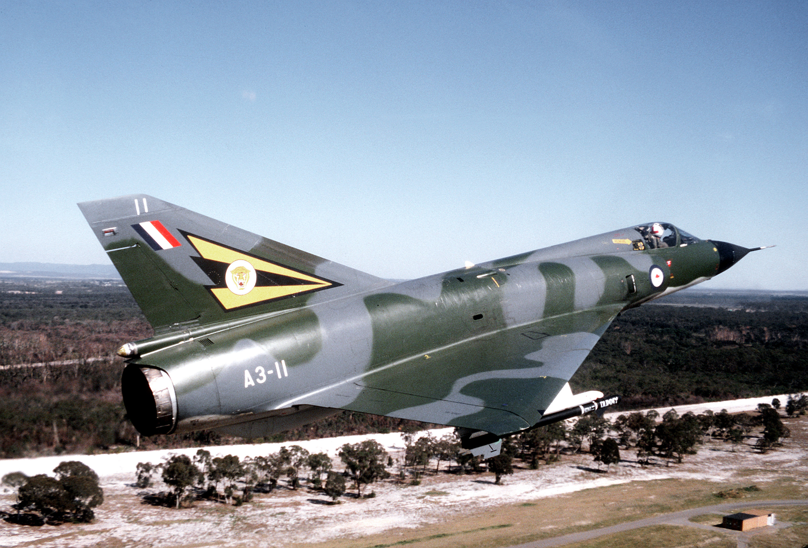
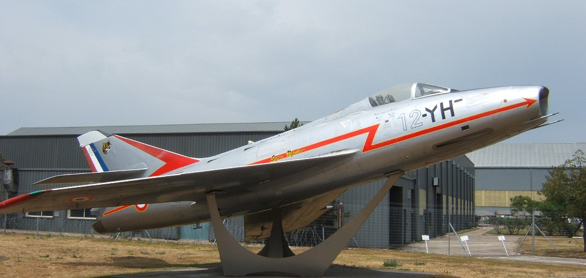
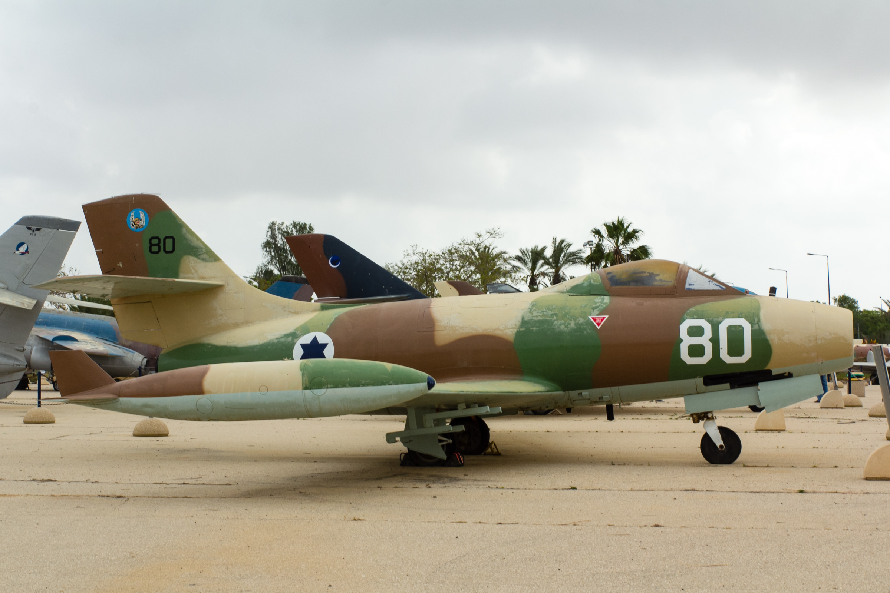

מטוסי התקיפה
אלו הם המטוסים המרכזיים שלקחו חלק במבצע המורכב. רובם היו מתוצרת התעשייה האווירית הצרפתית.

שם המקור בצרפתית: Dassault Mirage III

שם המקור בצרפתית: Dassault Super Mystère

שם המקור בצרפתית: Dassault M.D.450 Ouragan
מילון מונחים מבצעי
- פצצת פיצוח מסלולים (פפ"ם)
- פצצה ייעודית שפותחה במיוחד עבור חיל האוויר. היא תוכננה לחדור את שכבת הבטון של מסלול ההמראה ורק אז להתפוצץ מבפנים, מה שיצר מכתש עמוק ששיתק את שדה התעופה.
- דממת אלחוט
- איסור מוחלט על שידור ברשת הקשר הצבאית. כל מטוסי התקיפה המריאו וטסו עד למצרים מבלי להוציא הגה בקשר, כדי שמערכות ההאזנה לא יגלו אותם.
- סדין אדום
- מילת הקוד המבצעית שניתנה להפעלת התוכנית ולתחילת מתקפת המנע.
קולות מהשטח
כך נשמעו רשתות הקשר ברגעים הגורליים של המבצע: